Vaut-il son prix ? Un médicament, trois agences, trois réponses
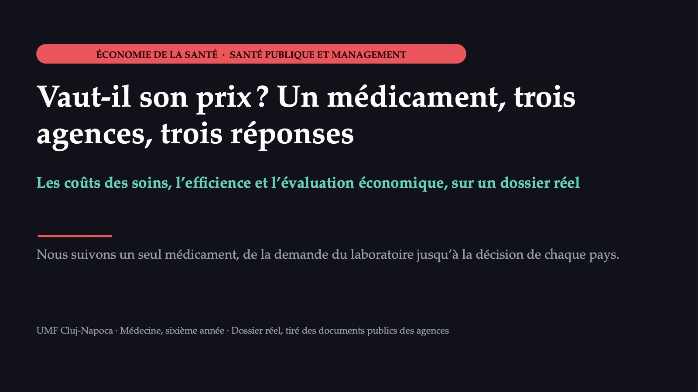
1 / 51Un nouveau médicament, à la porte du système
![ACTE I · LA SITUATION Un nouveau médicament, à la porte du système LA PATIENTE cancer du sein triple négatif, non résécable ou métastatique ; elle a déjà reçu au moins deux traitements systémiques LE MÉDICAMENT sacituzumab govitécan (Trodelvy), un conjugué anticorps–médicament LE DOSSIER déposé auprès de l’ANMDMR le 29 novembre 2022 ; le rapport de l’agence (dossier 17531) a été finalisé le 3 mars 2023 Le dossier est réel. Les exemples de calcul marqués « valeurs hypothétiques » sont construits pour le cours.](diapozitive/C11/002.jpg) 2 / 51
2 / 5110 mg/kg
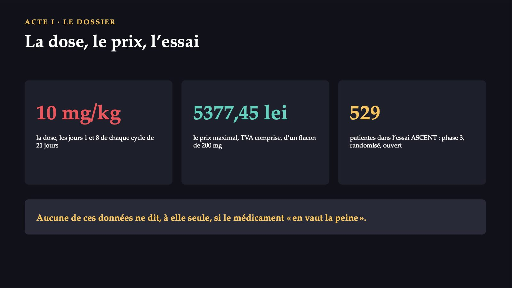
3 / 51Un gain de l’ordre de quelques mois
 4 / 51
4 / 51Ce que demande une commission à propos d’un nouveau médicament
 5 / 51
5 / 51Le sacituzumab govitécan devrait-il entrer sur la liste des médicaments remboursés en Roumanie ?
![MENTIMETER · VOTE 1 PREMIÈRE DÉCISION Le sacituzumab govitécan devrait-il entrer sur la liste des médicaments remboursés en Roumanie ? Vous siégez dans la commission qui décide. Vote individuel, sans discussion préalable. A Oui, sans condition. B Oui, mais sous condition, par un contrat prix-volume ou prix-volume-résultat avec le laboratoire. C Pas encore : il faut d’abord calculer combien coûte une année de vie ajustée sur la qualité gagnée. D Non : le prix est trop élevé pour le gain obtenu. Le résultat est projeté une seule fois. Répondez sur votre téléphone, au code affiché.](diapozitive/C11/006.jpg) 6 / 51
6 / 51Quatre choses qui manquent sur le marché de la santé
![POURQUOI LES SOINS NE SONT PAS UN MARCHÉ ORDINAIRE (1) Quatre choses qui manquent sur le marché de la santé L’INCERTITUDE personne ne sait quand il tombera malade ; la réponse est l’assurance L’ASYMÉTRIE D’INFORMATION le médecin en sait plus que le patient et choisit en son nom L’ALÉA MORAL l’assuré paie à la consommation moins que le coût réel ; d’où les tickets modérateurs LA SÉLECTION ADVERSE avec l’assurance volontaire, ce sont surtout les malades qui s’assurent, et la prime augmente La réponse publique : l’assurance obligatoire, avec des cotisations liées au revenu, non au risque.](diapozitive/C11/007.jpg) 7 / 51
7 / 51Trois raisons de plus, toutes présentes dans notre dossier
![POURQUOI LES SOINS NE SONT PAS UN MARCHÉ ORDINAIRE (2) Trois raisons de plus, toutes présentes dans notre dossier LES EXTERNALITÉS la vaccination d’une personne protège les autres ; les antibiotiques utilisés sans raison augmentent la résistance pour tous LES BIENS TUTÉLAIRES la société veut que certains soins parviennent à tous : les soins prénatals, la vaccination des enfants, le traitement de la tuberculose LE POUVOIR DE MARCHÉ le brevet fait du fabricant le seul vendeur ; un seul assureur public est le seul acheteur L’évaluation économique remplace « combien demande le vendeur ? » par « combien cela vaut-il pour le patient et pour le système ? ».](diapozitive/C11/008.jpg) 8 / 51
8 / 51Quatre sortes de coûts
![LES COÛTS DES SOINS Quatre sortes de coûts DIRECTS MÉDICAUX ce que consomme le système de santé : médicaments, consultations, examens, journées d’hospitalisation, prise en charge des effets indésirables DIRECTS NON MÉDICAUX ce que consomment le patient et la famille hors du système : transport, hébergement de l’accompagnant, soins donnés par les proches INDIRECTS la production perdue à cause de la maladie ou du décès : journées de travail perdues, retraite anticipée INTANGIBLES la douleur, l’anxiété, la souffrance ; difficiles à exprimer en argent, ils entrent dans les évaluations par la qualité de vie Le guide de la HAS les répartit en deux : directs (y compris l’aide apportée par un aidant) et indirects.](diapozitive/C11/009.jpg) 9 / 51
9 / 5121,4 %
![LES COÛTS DES SOINS · LA PERSPECTIVE Ce que l’on compte dépend de qui paie LE PAYEUR on ne compte que ce que paie le fonds d’assurance LE SYSTÈME DE SANTÉ on ajoute ce que paient les hôpitaux sur d’autres sources et les patients par le ticket modérateur LA SOCIÉTÉ on ajoute les coûts non médicaux et les pertes de productivité 21,4 % de la dépense courante de santé, en 2022, était payée directement par les patients, en Roumanie Quand vous lisez une évaluation, cherchez d’abord la perspective : elle explique bien des différences entre les pays.](diapozitive/C11/010.jpg) 10 / 51
10 / 51Chaque leu dépensé ne peut plus être dépensé ailleurs
![LE COÛT D’OPPORTUNITÉ Chaque leu dépensé ne peut plus être dépensé ailleurs LE COÛT RÉEL n’est pas la somme payée, mais la valeur de la meilleure option à laquelle nous renonçons UN EXEMPLE un médicament oncologique payé par le fonds peut signifier des opérations de la cataracte ou des prothèses de hanche qui ne se feront plus UN PIÈGE le « coût » d’un médicament n’est pas le prix du flacon : il inclut la dose totale, l’administration, la surveillance, les effets indésirables, les traitements après la progression Cette idée est à la base de tous les seuils de coût-efficacité.](diapozitive/C11/011.jpg) 11 / 51
11 / 51De la dose par kilogramme aux lei
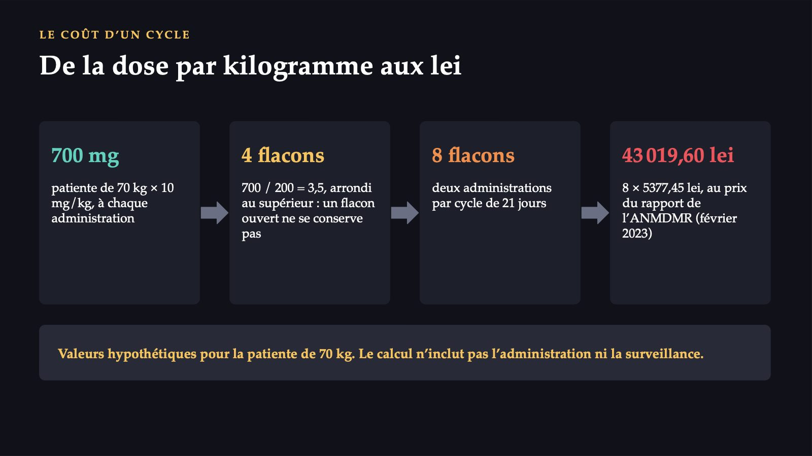
12 / 51Trois mots voisins, trois choses différentes
![EFFICACITÉ, EFFICACITÉ EN VIE RÉELLE, EFFICIENCE Trois mots voisins, trois choses différentes L’EFFICACITÉ l’effet en conditions idéales, contrôlées, comme dans un essai clinique randomisé : patients sélectionnés, suivi attentif L’EFFICACITÉ EN VIE RÉELLE l’effet en pratique courante, chez des patients non sélectionnés, avec des maladies associées et une observance imparfaite L’EFFICIENCE le rapport entre les résultats et les ressources : le meilleur résultat avec les ressources données Les résultats de l’essai ASCENT sont des résultats d’efficacité. L’agence française a demandé des données de vie réelle.](diapozitive/C11/013.jpg) 13 / 51
13 / 51Faire bien les choses ou faire les bonnes choses ?
![EFFICIENCE ET ÉQUITÉ Faire bien les choses ou faire les bonnes choses ? L’EFFICIENCE TECHNIQUE faisons-nous cela avec le moins de ressources ? La même opération avec une journée d’hospitalisation de moins. L’EFFICIENCE ALLOCATIVE faisons-nous les bonnes choses ? Nous finançons les soins qui apportent le plus grand gain de santé pour l’argent disponible. L’ÉQUITÉ l’allocation la plus efficiente n’est pas forcément la plus juste ; les maladies rares ou très graves peuvent rester sans rien L’évaluation économique des nouveaux médicaments est, avant tout, un instrument d’efficience allocative.](diapozitive/C11/014.jpg) 14 / 51
14 / 51Choisissez le type selon la question
![LES TYPES D’ÉVALUATION ÉCONOMIQUE Choisissez le type selon la question MINIMISATION DES COÛTS résultats équivalents : on choisit le moins cher ; un générique face à l’original COÛT-EFFICACITÉ une maladie, un résultat clinique naturel : années gagnées, cas évités COÛT-UTILITÉ résultats qui combinent durée et qualité de vie ; l’unité est l’année de vie ajustée sur la qualité COÛT-BÉNÉFICE les résultats aussi en argent ; la HAS ne la recommande pas dans l’analyse de référence Beaucoup appellent aussi « coût-efficacité » l’analyse coût-utilité, y compris dans les textes des agences.](diapozitive/C11/015.jpg) 15 / 51
15 / 51Deux facteurs : combien de temps vous vivez et comment
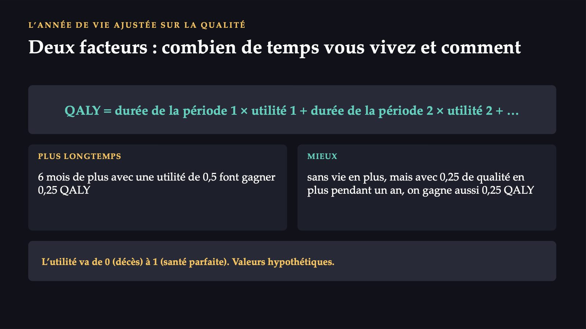
16 / 51Combien coûte de plus chaque QALY de plus
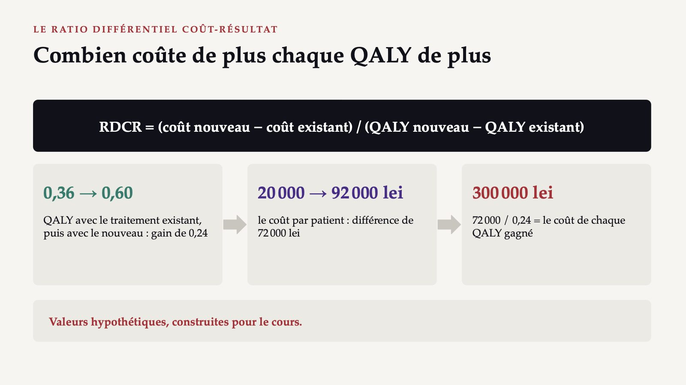
17 / 51Trois choses à comprendre dans la formule
![LIRE LE RATIO Trois choses à comprendre dans la formule DIFFÉRENTIEL ce qui compte, c’est le QALY de plus par rapport à ce que nous faisons déjà ; un comparateur faible fait paraître le nouveau traitement meilleur LE DÉNOMINATEUR EST PETIT le gain est souvent une fraction de QALY ; s’il se révèle deux fois plus petit, le ratio double IL NE DIT PAS COMBIEN CELA COÛTE AU TOTAL un bon ratio, sur des centaines de milliers de patients, coûte plus qu’un mauvais, sur quelques dizaines C’est pourquoi le choix du comparateur est la première bataille de tout dossier.](diapozitive/C11/018.jpg) 18 / 51
18 / 51Quatre quadrants, une seule zone de décision
![LE PLAN COÛT-EFFICACITÉ Quatre quadrants, une seule zone de décision différence de coût : en haut, plus cher ; en bas, moins cher DOMINANT plus efficace et moins cher : on l’adopte PLUS EFFICACE ET PLUS CHER zone de décision : ici, cela dépend du seuil MOINS EFFICACE ET MOINS CHER rare et éthiquement délicat : une perte de santé contre une économie DOMINÉ moins efficace et plus cher : on le rejette moins efficace plus efficace Presque tous les nouveaux médicaments sont dans le quadrant supérieur droit.](diapozitive/C11/019.jpg) 19 / 51
19 / 51L’incertitude : sensibilité, extrapolation, actualisation
![À QUEL POINT LE RATIO EST SÛR L’incertitude : sensibilité, extrapolation, actualisation L’ANALYSE DE SENSIBILITÉ on change un paramètre après l’autre ou, de façon probabiliste, tous à la fois ; le résultat se dessine comme une courbe d’acceptabilité L’EXTRAPOLATION l’essai suit les patients quelques mois ; le modèle estime le reste de la vie. Des courbes différentes donnent des ratios très différents L’ACTUALISATION les coûts et les gains futurs sont ramenés à la valeur d’aujourd’hui ; HAS : taux de 2,5 % pour les horizons de moins de 30 ans La question utile n’est pas « combien vaut le ratio ? », mais « à quel point le ratio est-il sûr ? ».](diapozitive/C11/020.jpg) 20 / 51
20 / 51Un nouveau traitement fait gagner un QALY. Ce QALY devrait-il avoir la même valeur si le patient a quatre-vingts ans ou vingt ans ?
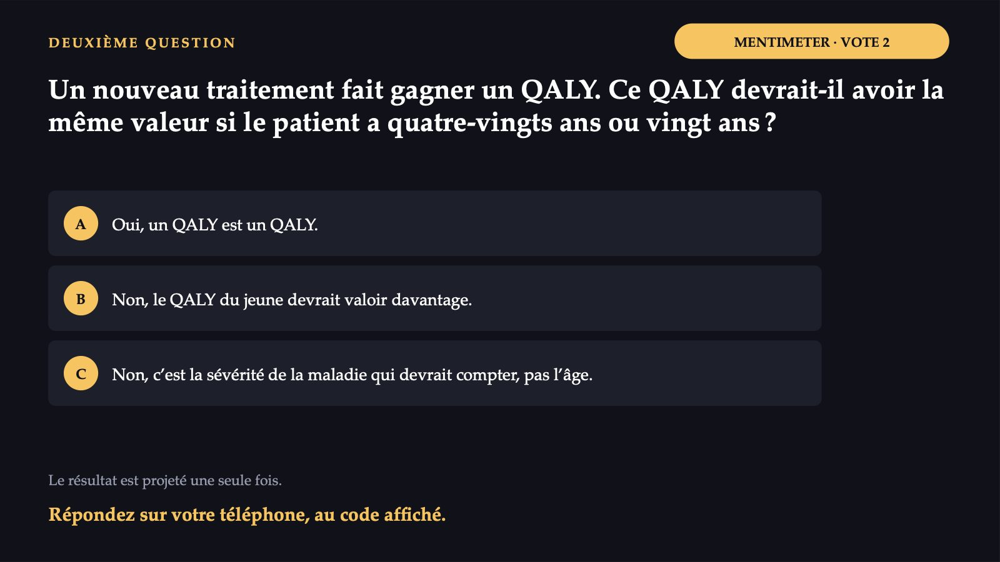
21 / 51Le ratio, à lui seul, ne décide rien
![LE SEUIL DE COÛT-EFFICACITÉ Le ratio, à lui seul, ne décide rien DÉFINITION DE TRAVAIL la valeur maximale du ratio à laquelle le payeur considère la technologie comme une utilisation acceptable des ressources EN PARTANT DE LA DEMANDE combien la société serait disposée à payer pour une année de vie en bonne santé EN PARTANT DE L’OFFRE le coût d’opportunité : le coût auquel le système produit aujourd’hui un QALY par les soins qu’il perdrait Le seuil n’est pas une valeur scientifique, mais un choix du système.](diapozitive/C11/022.jpg) 22 / 51
22 / 51Plus de poids pour la sévérité, non pour l’âge
![ROYAUME-UNI · NICE Plus de poids pour la sévérité, non pour l’âge moins de 25 000 £ par QALY la décision repose en général sur le ratio lui-même 25 000 – 35 000 £ le comité pèse aussi d’autres facteurs DANS LE CAS DE RÉFÉRENCE tous les QALY ont le même poids SÉVÉRITÉ DE LA MALADIE dans les maladies très sévères, la pondération est de 1,2 ou 1,7 L’ÂGE n’a pas de pondération propre ; ce qui compte, c’est ce que le patient perd Trodelvy : jugé en 2022 d’après les critères de fin de vie, qui ne figurent plus dans le manuel actuel.](diapozitive/C11/023.jpg) 23 / 51
23 / 51Un seuil fixe ne devrait jamais être utilisé seul
![ORGANISATION MONDIALE DE LA SANTÉ Un seuil fixe ne devrait jamais être utilisé seul 2005 en dessous du revenu moyen par habitant pour une année de vie ajustée sur l’incapacité évitée : très coût-efficace ; en dessous de trois fois cette valeur : coût-efficace 2016 les seuils sont des normes générales, mondiales ; ils ne disent rien de l’accessibilité financière ni de l’impact budgétaire PÉROU ET POLOGNE Pérou : trastuzumab coût-efficace, mais au-dessus de tout le budget du cancer du sein. Pologne, 2012 : seuil légal de trois fois le produit intérieur brut par habitant Un seuil fixe ne devrait jamais être utilisé comme seul critère.](diapozitive/C11/024.jpg) 24 / 51
24 / 51Les uns interdisent le seuil, les autres n’en ont pas
![ÉTATS-UNIS ET ROUMANIE Les uns interdisent le seuil, les autres n’en ont pas ÉTATS-UNIS la loi fédérale interdit à l’institut qui finance la recherche comparative sur les résultats d’utiliser un seuil en dollars par QALY, pour ne pas diminuer la valeur de la vie des personnes handicapées ROUMANIE il n’existe pas de seuil de coût-efficacité ; l’évaluation des technologies de santé ne porte que sur les médicaments, par un système de points lié en grande partie au remboursement dans d’autres pays Un ratio d’un pays ne se transpose pas dans un autre : les prix, le comparateur et le seuil diffèrent.](diapozitive/C11/025.jpg) 25 / 51
25 / 51Valoir son prix, pouvoir se le permettre : deux questions
![L’IMPACT BUDGÉTAIRE Valoir son prix, pouvoir se le permettre : deux questions impact budgétaire d’une année = (patients traités × coût par patient) − coût des traitements remplacés EN VAUT-IL LA PEINE ? répond le ratio différentiel coût-résultat PEUT-ON SE LE PERMETTRE ? répond l’analyse d’impact budgétaire, année après année, sur quelques années SOUVENT OPPOSÉES un excellent vaccin, donné à tous, peut avoir un impact élevé ; un médicament pour une maladie rare, au mauvais ratio, un impact faible La bonne décision tient compte des deux.](diapozitive/C11/026.jpg) 26 / 51
26 / 51Le même dossier, la même année, dans trois agences
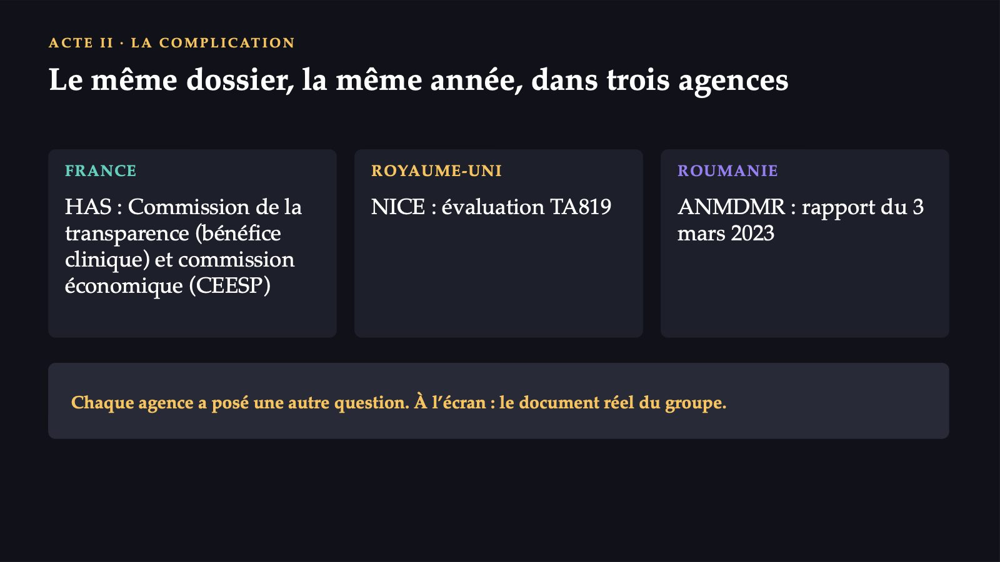
27 / 51L’évaluation clinique devient commune, le prix reste national
![ÉVALUATION DES TECHNOLOGIES DE SANTÉ L’évaluation clinique devient commune, le prix reste national 12 janvier 2025 nouveaux médicaments contre le cancer et thérapies innovantes 13 janvier 2028 les médicaments orphelins 13 janvier 2030 les autres nouveaux médicaments DÉFINITION processus multidisciplinaire qui synthétise les aspects médicaux, sociaux, économiques et éthiques d’une technologie, de manière systématique, transparente, impartiale CE QUI RESTE NATIONAL le prix et le remboursement restent de la compétence exclusive de chaque État L’évaluation européenne dit dans quelle mesure le médicament fonctionne ; combien il vaut la peine de payer reste la question de chaque pays. Source : règlement (UE) 2021/2282.](diapozitive/C11/028.jpg) 28 / 51
28 / 51Le bénéfice clinique et le ratio revendiqué par l’industriel
![FRANCE · HAS Le bénéfice clinique et le ratio revendiqué par l’industriel BÉNÉFICE CLINIQUE service médical rendu (SMR) important (avis du 6 avril 2022) ; l’industriel avait revendiqué un SMR important et une ASMR de niveau II AVIS ÉCONOMIQUE daté du 5 juillet 2022 : l’industriel revendique 250 086 euros par QALY POPULATION CIBLE 2 000 patientes par an, estimation modérément surestimée ; 1 075 euros hors taxes par flacon pendant l’accès précoce SMR : service médical rendu. ASMR : amélioration par rapport à ce qui existe. Le niveau d’ASMR accordé ne figure pas dans les documents consultés.](diapozitive/C11/029.jpg) 29 / 51
29 / 51524 %
 30 / 51
30 / 51793 £
 31 / 51
31 / 51La décision a été obtenue par la négociation du prix
 32 / 51
32 / 51L’ANMDMR n’a calculé aucun ratio pour la Roumanie
![ROUMANIE · ANMDMR L’ANMDMR n’a calculé aucun ratio pour la Roumanie CE QUI N’A PAS ÉTÉ CALCULÉ aucun ratio coût-efficacité pour la Roumanie, aucun impact budgétaire ; les points « ETM bazată pe cost-eficacitate » viennent des avis du NICE, du SMC et des agences allemandes CE QUI A ÉTÉ APPLIQUÉ le tableau n° 7 de l’arrêté 861/2014, proposé par l’entreprise : pas de comparateur pertinent sur la liste CE QUE NOTE LE TABLEAU HAS, NICE ou SMC, agences allemandes, remboursement dans 8–13 États, survie inférieure à 24 mois, augmentation d’au moins 3 mois D’autres critères notent une étude locale et l’impact budgétaire ; le tableau appliqué ne les contient pas.](diapozitive/C11/033.jpg) 33 / 51
33 / 51Les 85 points du dossier 17531
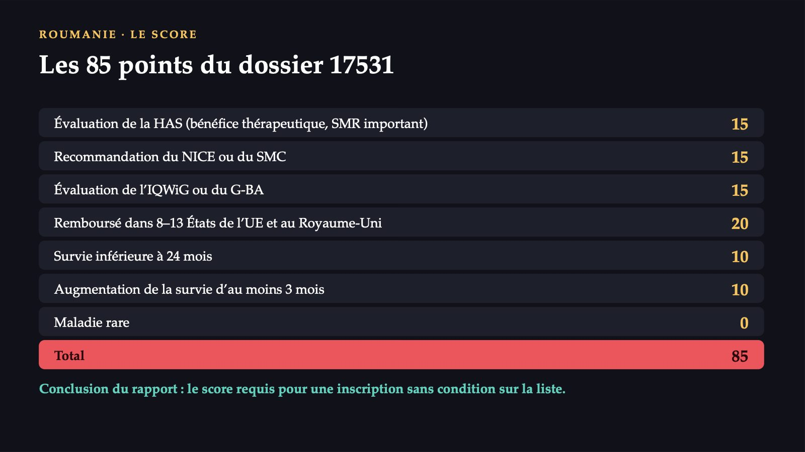
34 / 51Un score construit à partir des décisions des autres
![ROUMANIE · DEUX REMARQUES Un score construit à partir des décisions des autres 45 points : d’autres agences ont évalué favorablement 20 points : d’autres pays le remboursent 20 points : critères de survie PREMIÈRE plus de la moitié des points (45 sur 85) viennent des évaluations d’autres agences, au total 65 sur 85 des décisions des autres ; le NICE a décidé à un prix réduit confidentiel, inconnu de l’évaluation roumaine DEUXIÈME les critères de survie reprennent les seuils du NICE pour la fin de vie, 24 mois et 3 mois ; au NICE le ratio devait être calculé, ici ils rapportent des points sans ratio](diapozitive/C11/035.jpg) 35 / 51
35 / 51Ce qu’a demandé chaque agence
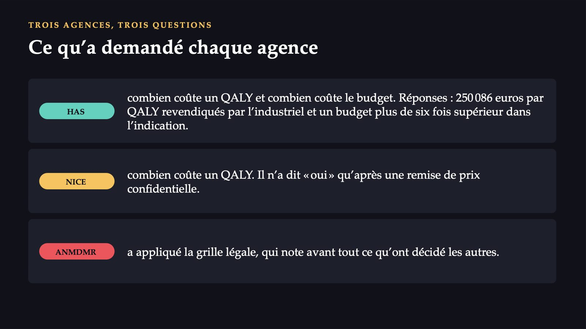
36 / 51Qu’aurait dû établir l’évaluation roumaine avant de décider ?
![MENTIMETER · VOTE 3 DEUXIÈME DÉCISION Qu’aurait dû établir l’évaluation roumaine avant de décider ? À l’écran : le document du groupe et le tableau des points de l’ANMDMR. Vote individuel. A Combien coûte en Roumanie un QALY gagné par rapport à la chimiothérapie utilisée aujourd’hui. B Combien le fonds dépensera, au total, au cours des cinq prochaines années. C Si les résultats de l’essai se maintiennent chez les patientes traitées dans les hôpitaux roumains. D Rien de plus : les évaluations des autres agences suffisent. Le résultat est projeté une seule fois. Répondez sur votre téléphone, au code affiché.](diapozitive/C11/037.jpg) 37 / 51
37 / 51La réponse apparaît après la séance
La réponse apparaît après la séance
La réponse apparaît après la séance
La réponse apparaît après la séance
Quatre raisons pour lesquelles les décisions diffèrent
![ACTE III · POURQUOI ELLES DIFFÈRENT Quatre raisons pour lesquelles les décisions diffèrent LA QUESTION POSÉE la HAS et le NICE ont demandé un ratio et ont jugé son incertitude ; l’ANMDMR, la preuve que d’autres avaient évalué favorablement LE PRIX trois prix : négocié confidentiellement au NICE, occulté à la HAS, maximal publié à l’ANMDMR, mais non noté LE COMPARATEUR la HAS et le NICE ont comparé à la chimiothérapie utilisée ; l’ANMDMR n’a trouvé aucun comparateur sur la liste LES VALEURS DU SYSTÈME le NICE accepte un ratio plus élevé pour les maladies graves, mais le calcule ; la grille roumaine donne des points sans ratio](diapozitive/C11/040.jpg) 40 / 51
40 / 51Entre « oui » et « non », il existe une troisième voie
 41 / 51
41 / 51Le même test, un autre médicament : Pluvicto
![ACTE III · LE TRANSFERT Le même test, un autre médicament : Pluvicto LE TRAITEMENT lutécium-177 vipivotide tétraxétan, pour le cancer de la prostate métastatique résistant à la castration, après hormonothérapie et taxanes ROUMANIE dossier 14541, déposé le 30 avril 2024 ; rapport finalisé le 21 août 2024 FRANCE ET ROYAUME-UNI France, analyse de l’industriel, face au cabazitaxel : 88 919 € de plus, 0,250 QALY de plus, 355 002 €/QALY sur cinq ans. Royaume-Uni : 20 000 £ par dose ; les ratios ne peuvent pas être publiés Vérification : 88 919 / 355 002 = 0,2505 QALY, soit 0,250 arrondi.](diapozitive/C11/042.jpg) 42 / 51
42 / 51À partir de ce que vous avez appris aujourd’hui, que recommanderiez-vous pour Pluvicto en Roumanie ?
 43 / 51
43 / 51La réponse apparaît après la séance
La réponse apparaît après la séance
Quand l’efficience n’est pas le seul critère
![L’ÉTHIQUE DE L’ALLOCATION Quand l’efficience n’est pas le seul critère RÈGLE DU SAUVETAGE l’obligation de sauver une personne identifiée, quel qu’en soit le coût VIE COMPLÈTE celui qui a vécu de nombreuses années aurait un droit plus faible aux ressources ; argument pour des QALY plus précieux chez les jeunes HANDICAP une vie avec un handicap a une utilité inférieure à 1 et produit moins de QALY ; d’où l’interdiction aux États-Unis FIN DE VIE prime pour les gains en fin de vie ; les malades chroniques n’en bénéficient pas Vous les connaissez pour les reconnaître, non pour en choisir un.](diapozitive/C11/045.jpg) 45 / 51
45 / 51Les limites de ce que nous savons du dossier
![CE QUE NOUS NE POUVONS PAS AFFIRMER Les limites de ce que nous savons du dossier LE PRIX RÉEL le prix payé pour Trodelvy en France ou au Royaume-Uni n’est pas connu : il est occulté ou confidentiel AUJOURD’HUI nous ne pouvons pas affirmer que Trodelvy est encore remboursé aujourd’hui, ni avec quel protocole ; ni qu’il existe un seuil en Roumanie ROUMANIE nous ne pouvons pas affirmer que les résultats de l’essai ASCENT se reproduisent chez les patientes en Roumanie : il n’existe pas de données roumaines de vie réelle](diapozitive/C11/046.jpg) 46 / 51
46 / 51Ce qu’il reste de la séance
![RÉCAPITULATION Ce qu’il reste de la séance 1 Les soins ne sont pas un marché ordinaire : l’incertitude, l’asymétrie d’information, l’aléa moral, la sélection adverse, les externalités et le pouvoir de marché justifient l’intervention publique. 2 Les coûts se comptent dans une perspective déclarée ; le coût réel est le coût d’opportunité. 3 Le ratio différentiel coût-résultat dépend du comparateur, de l’extrapolation et d’un petit dénominateur. 4 Le seuil est un choix du système, il ne s’utilise pas seul, et l’impact budgétaire est une question distincte. 5 La HAS et le NICE ont calculé le ratio ; l’ANMDMR a appliqué une grille qui note surtout les décisions des autres.](diapozitive/C11/047.jpg) 47 / 51
47 / 51Dix affirmations, vrai ou faux
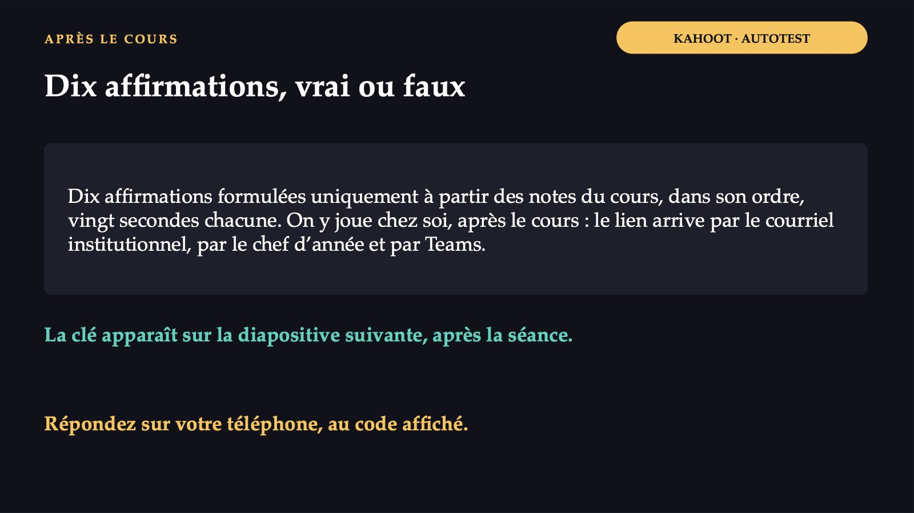
48 / 51La réponse apparaît après la séance
La réponse apparaît après la séance
Ce que vous faites autrement lundi matin
![LUNDI MATIN Ce que vous faites autrement lundi matin 1 Quand un patient demande pourquoi un nouveau médicament n’est pas remboursé : être efficace n’est pas la même chose que valoir son prix ; le système met aussi en balance ce qui ne pourra plus être payé avec le même argent. 2 Quand un représentant d’un laboratoire vous rend visite : quel était le comparateur de l’essai, combien coûte le traitement complet, qu’ont dit la HAS ou le NICE. 3 Quand vous prescrivez un médicament cher : l’efficacité en vie réelle chez vos patients peut différer de l’efficacité de l’essai ; les données de vie réelle sont ce qu’a demandé l’agence française.](diapozitive/C11/050.jpg) 50 / 51
50 / 51Avant de partir
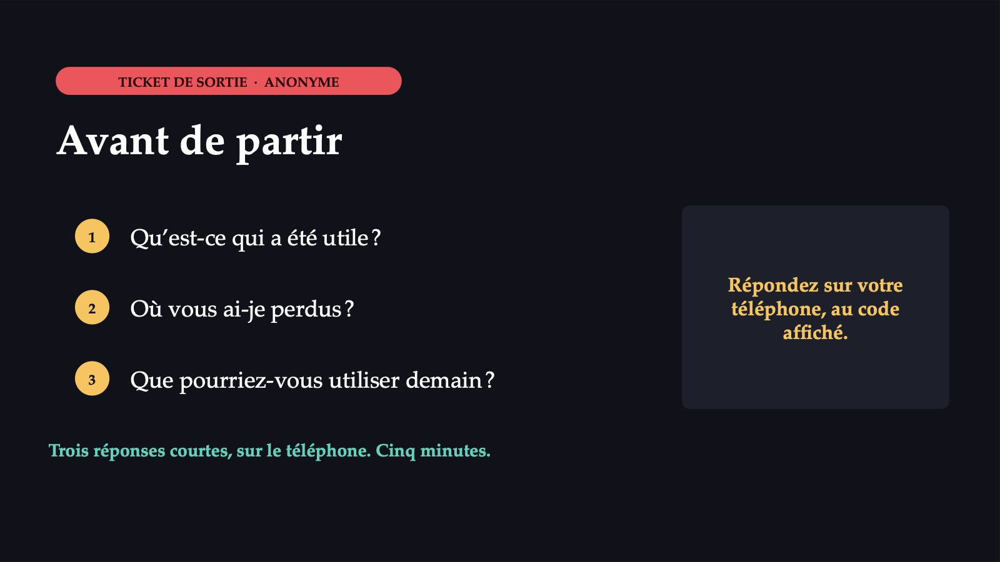
51 / 51Flèches ou espace : navigation · O : vue d’ensemble · N : notes de l’intervenant · F : plein écran · Échap : fermer